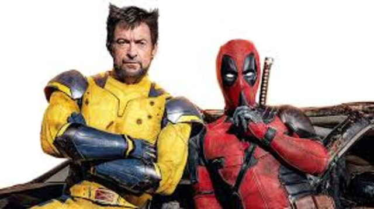

'Deadpool & Wolverine' bate recorde de maior bilheteria de um filme para maiores de idade!
Antes do fim de semana, o quarto desde a estreia na maior parte dos países, o filme da Marvel já era a segunda maior bilheteria do ano, atrás apenas de "Divertida Mente 2" (que também é da Disney e que ainda está em cartaz em alguns mercados, com arrecadação de US$ 1,62 bilhão).
Ler mais
'Excêntrico filme B de ficção científica': a opinião de crítico da BBC sobre novo filme do Super-Homem
Superman não é apenas um novo filme, nem mesmo o primeiro de uma possível série de filmes. Ele marca o lançamento de todo um novo universo cinemático.Os últimos lançamentos da DC envolvendo super-heróis tiveram um desfecho desonroso em 2023.
Ler mais
Spider-Noir: Amazon divulga primeira foto e teaser de Nicolas Cage como o Homem-Aranha;
Cage lidera o elenco como o Spider-Noir, acompanhado de um time estelar que inclui o vencedor do Emmy Lamorne Morris, os indicados ao Oscar e vencedores do Emmy Brendan Gleeson, Abraham Popoola, Li Ju.
Ler mais